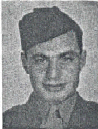

Corp Joseph F Falcone: Departed the USA with Company C. Killed in action on Iwo Jima February 26, 1945. At the time of his death he was a fire team leader in the Third Platoon.
The following email received from Joe's son, Joe Jr, is reproduced in its entirety
Hi Rowland:
Thank you for trying to find John Slimak. I cannot express my deep appreciation for all you have done. I have accomplished more than I ever thought possible.
I have been following, with great interest, the progress of your website and I am certain that if my Dad were alive to see it, he would be as impressed as I am. He was very proud to be a marine and wrote often about all his great buddies in Co. C.
There is much I could add to the text of info you have on Dad but I think that in addition to the fact that he fought in all four battles, he would have liked you to mention that he was a B.A.R. man. According to Bob Fiebig, there were only nine of them in Co. C. He really loved that rifle and wrote often about it and his ability to qualify for its use. Bill McVey mentioned in a letter to Mom that on the last day of his life, Dad's automatic rifle did a lot of damage to the enemy before he was killed. As you may know, Bill and Eddie Rashid were two of his closest buddies. Bill brought spirituality back into Dad's life and Eddie was his partner in dreaming of the things they would do when they returned home. As you know, Eddie was also KIA at Iwo Jima.
Dad joined the Marines on 12/12/42 (He believed that because they were the best trained outfit, this would increase his chance of surviving the war). Aside from his parents, Mom and myself, (18 months old), Dad left 3 sisters and 4 brothers, one of which was also a Marine. It was ironic that Dad would write home to his younger brother "DO NOT join the Marines!" (By then he knew the danger). However, Uncle Jimmy was drafted into the Corps in 1943 or '44) My grandmother did not leave her apartment for nearly 3 years after Dad's death and two framed pictures of him in uniform remained in clear view in her living room until she died. They now sit on a shelf in my dining room.
I do not expect you to write all of this but because I have four large binders of letters from Dad to both his family and my Mom and because he was the oldest son and 5 of his siblings are still alive, I could go on forever on this subject. (Maybe I should write a book someday and get this all out of me!)
Please send my best to the men of the 4th Marine Division when you see them in Detroit. I feel as if I know each of them through Dad's many letters describing what it was like being in the Marine Corps during WWII.
Remember to let me know how the reunion went when you return home.
Sincerely,
Joe Falcone, Jr.
Created by Rowland Lewis
Last Modified 08/14/99